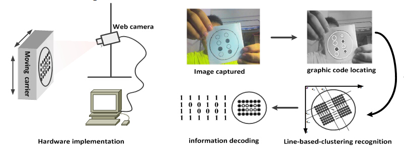

A Circle Grid Array Graphic Code and its dynamic visual recognition
Designed a Circle Grid Array Graphic Code and its dynamic visual recognition method. Intelligent Control and System Lab at HIT, Project designer: Jiangsu Yonggang Group Co.,LTD.
..
Flow Chart

Highlights
- A Circle Grid Array Graphic Code is proposed which could be painted on ladles by hand and does not require as high-precision structures as QR codes or bar codes. This circle grid array graphic code is of great flexibility for users to define their own encoding mechanism. The simple structure makes it easy to identify in long distance and through multiple perspectives by low-resolution cameras.
- A dynamic visual recognition algorithm is proposed for this graphic code during its movement. The recognition algorithm mainly involves Hough circle detection to locate graphic code ROI, line based clustering for circle grid array identification, and information decoding.
- This is a dynamic recognition process which means it is suitable for moving carrier and the recognition results from frames in sequence can be verified mutually to give a synthesized result. The experimental results show that no error recognition occurs as long as the ladles are in the recognizable range, and it is also suitable for the situation when graphic code rotates.
- Applied for a national patent on this circle grid array graphic code and its visual recognition method.
Video Demo
..
© 2015 Curriculum Vitae All Rights Reseverd | Design by Wanxin Jin & Doctor Yang